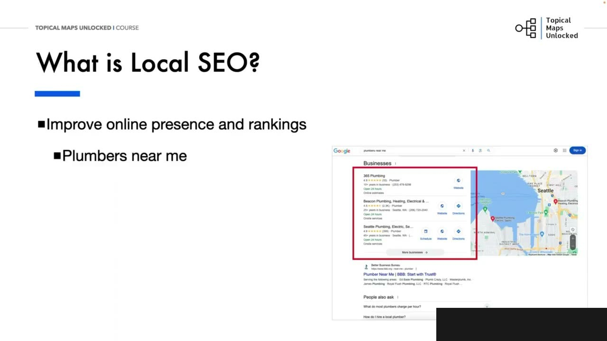
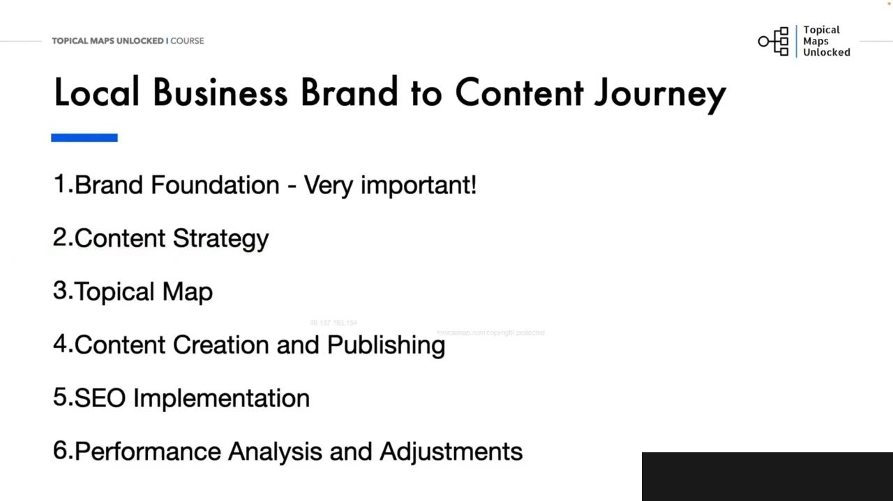
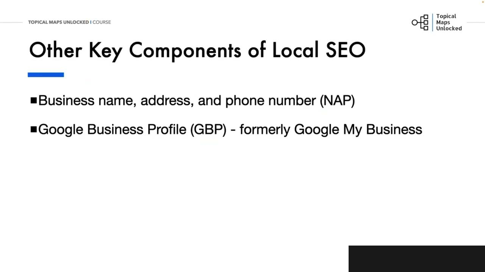
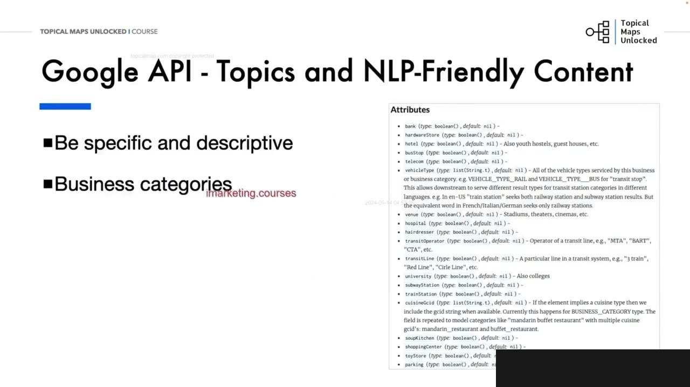
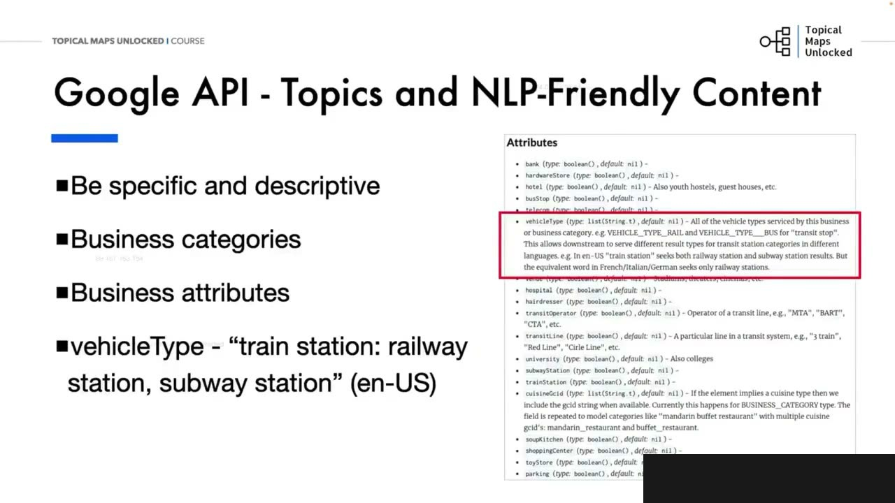
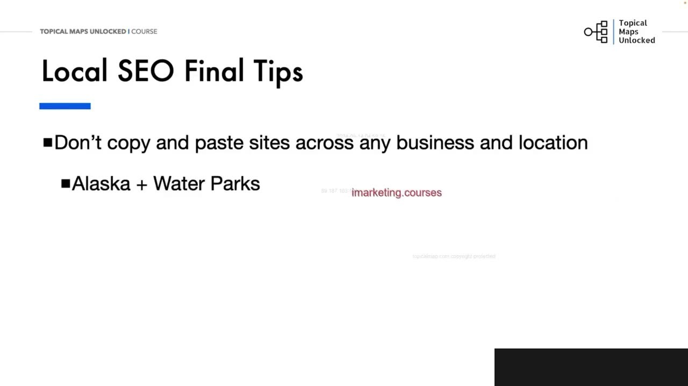
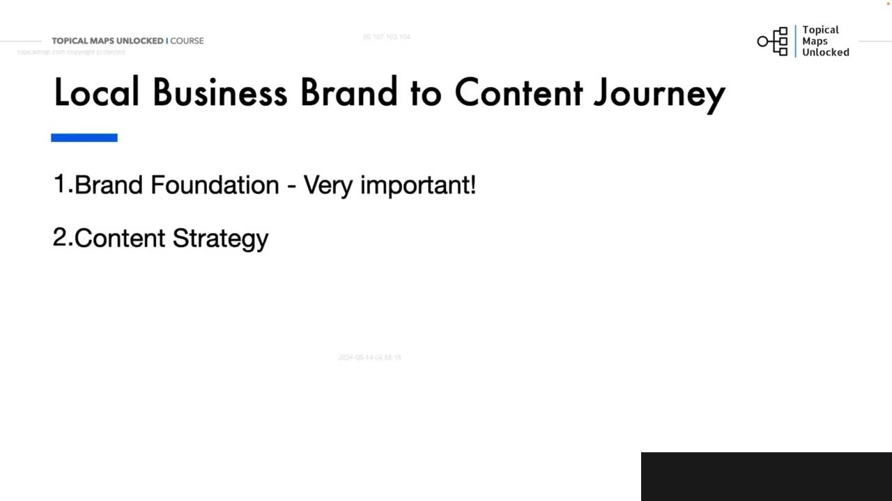
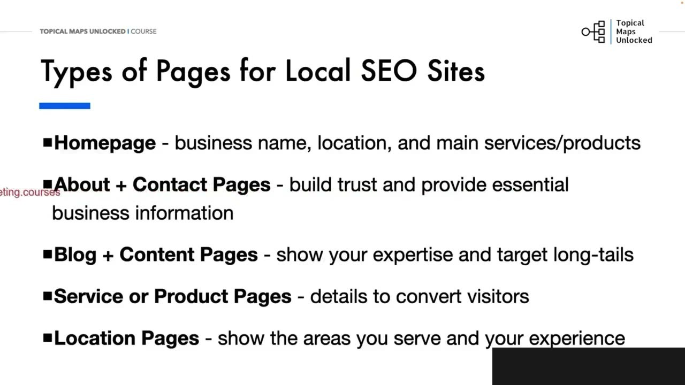
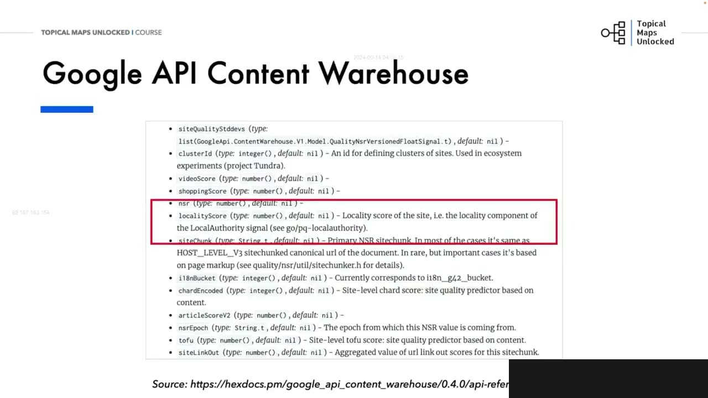

Local SEO & Content Strategy
1. Local SEO là gì và vì sao ba yếu tố quyết định thứ hạng
Diễn giải chi tiết: Hãy nói về seo địa phương và chiến lược nội dung. Chúng ta sẽ xem xét một số chiến lược và cân nhắc quan trọng cho các doanh nghiệp địa phương. Chúng ta sẽ không thể bao quát mọi thứ về seo địa phương, nhưng chúng ta sẽ đề cập đến một số chiến lược cốt lõi cho các trang web và nội dung. Hãy bắt đầu với việc seo địa phương, là gì? Nếu bạn nhìn vào hình ảnh bên phải, bạn có thể thấy gói bản đồ địa phương trong sức. Seo địa phương là việc cải thiện sự hiện diện trực tuyến và xếp hàng của một doanh nghiệp để thu hút nhiều khách hàng hơn, nhiều khách hàng tìm năng hơn từ các tìm kiếm địa phương liên quan trên các công cụ tìm kiếm và Google Maps. Nó sẽ dành cho các tìm kiếm như thợ sự ống nước gần tôi để tìm thợ sự ống nước trong khu vực của bạn. Seo địa phương, tập trung vào vị quản bá sản phẩm và dịch vụ của bạn đến khách hàng địa phương vào đúng thời điểm họ đang tìm kiếm chúng. Vì vậy, nó quan trọng vì nó giúp các doanh nghiệp địa phương cạnh tranh trong khu vực địa lý cụ thể của họ. Các yếu tố chính ảnh hưởng bên sếp hàng tìm kiếm địa phương là sự liên quan. Doanh nhịp của bạn có liên quan như thế nào đối với người dùng. Nó có phù hợp với ý định tìm kiếm của người dùng không? Hoảng cách, hoảng cách của doanh nghiệp từ vị trí của người tìm kiếm. Và quy tính, quy tính và độ phổ biến tổng thể của doanh nghiệp. Điều đó thường được đánh giá thông qua đánh giá và xếp hàng từ các trang web như BetaBusiness Directory, BBB và thông qua hồ sơ Google Business. Điều đó xuất hiện trong gói bản đồ đề phương. Khi nói đến các dân nhịp đề phương và hành trình từ thương hiệu đến nội dung, tình tốt là không có nhiều thay đổi. Vì vậy, hãy xem lại các giai đoạn của hành trình. Nền tảng thương hiệu. Điều này càng quan trọng hơn vì đó là một gên nhịp với địa chỉ, sản phẩm, dịch vụ và các yếu tố kinh gên khác.
Local SEO cải thiện sự hiện diện online và thứ hạng của doanh nghiệp để thu hút khách hàng từ các tìm kiếm địa phương trên search engine và Google Maps, chẳng hạn “plumber near me”. Mục tiêu là quảng bá sản phẩm hoặc dịch vụ tới khách hàng địa phương đúng lúc họ đang tìm kiếm. Ba yếu tố chính là relevance, distance và prominence: doanh nghiệp có khớp search intent không, cách người tìm kiếm bao xa, và doanh nghiệp nổi bật, uy tín đến mức nào qua review, ranking, BBB hoặc Google Business Profile.

2. Hành trình từ brand đến content cho doanh nghiệp địa phương
Diễn giải chi tiết: Chiến lược nội dung của bạn. Chiến lược quan trọng tương tự, nhưng với cấu trúc bổ sung cho, các trang dịch vụ và sản phẩm đề phương. Phần blog hoặc tài nguyên sẽ giống như các trang nội dung. Việc tạo và quản lý bản đồ chủ đề của bạn vẫn như cũ, nhưng chúng tôi cũng đang thêm các dịch vụ và sản phẩm của họ. Liên kết nội bộ cũng sẽ có thêm các chiến lược vì các trang quan trọng của bạn là các trang dịch vụ và sản phẩm. Đó là nơi bạn sẽ tạo ra tiên. Việc tạo và xuất bản nội dung sẽ có nhiều trang dịch vụ và sản phẩm đề phương tương tự. Chuyển khai sơ. Là nơi bạn sẽ thực hiện thêm các công việc cho xeo đề phương, như Google Business Profile Google và đánh dấu schema. Và với việc phân tích hiệu suất, quy trình sẽ tương tự cho lưu lường traffic, nhưng bạn cũng chẳng xem xe tối yêu hóa tỷ lệ chuyển đổi, xe error. Hành trình báo gồm ba giai đoàn giống nhau, nhận thức. Giai đoạn, đầu của phểu nơi người mua nhận ra họ có một vấn đề hoặc, nhu cầu cần xen xét. Giai đoạn giữa của phểu nơi họ xác định vấn đề của mình rõ hơn. Và nhiên cứu các lựa chọn và quyết định ở cuối phểu nơi họ chọn một giai phát. Và bạn chuyển đổi họ. Hiểu rõ các giai đoạn này là chi khóa giúp bạn tạo ra nội dung phù hợp đáp ứng nhu cầu của khán giả tại mỗi điểm trong hành trình của họ. Các trang web đì phương có các loại trang giống như các trang nội dung, và hầu hết tất cả các trang web đều có, với những trang bổ sung cụ thể cho các doanh nghiệp đì phương. Thó trang chủ nên nổi bật. Rõ ràng nêu tên doanh nghiệp, địa điểm và các dịch vụ hoặc sản phẩm chính của bạn. Các trang giới thiệu và nội dung của bạn sẽ dịnh niền tin và cung cấp thông tin kinh doanh thiết yếu dùng và công cụ tìm kiếm. Các trang blog và nội dung giúp bạn thể hiện chuyên môn và nhắm mục tiêu vào các chủ đề và từ khóa
Brand Foundation quan trọng hơn vì brand gắn với địa chỉ, sản phẩm, dịch vụ và bối cảnh kinh doanh. Content Strategy cần bổ sung local service pages và product pages; blog vẫn là phần content giáo dục. Topical Map giữ nguyên nhưng thêm dịch vụ và sản phẩm. Internal Linking ưu tiên các trang có khả năng tạo lead. Triển khai thêm Google Business Profile và Schema Markup; phân tích ngoài traffic còn xem conversion rate optimization. Buyer’s Journey vẫn gồm awareness, giữa phễu khi nghiên cứu lựa chọn, và cuối phễu khi chọn giải pháp.

3. Bộ trang cần có trên website địa phương
Diễn giải chi tiết: dài. Các trang dịch vụ và sản phẩm nghiên lẽ cung cấp chi biết để chuyển đổi khách truy cập và các trang địa điểm. Chúng quan trọng để chia sẻ nơi bạn có văn phòng hoặc nếu bạn phục vụ nhiều khu vực. Thể hiện kinh nghiệm và chuyên môn của bạn trên những địa điểm này. Để cập đến những điều như khí hậu và thời tiết cho các khu vực cụ thể nếu đó là yếu tố trong dịch vụ của bạn, như Lam Vương. Có những thành phần quan trọng khác khi nói đến xeo Đị Phương giúp kết nối tất cả lại với nhau để xây dựng uy tính chủ đề và niềm tin cho, người dùng và công cụ tìm kiếm. Có một tên doanh nghiệp đỏ ràng và nhất quán, địa chỉ, số điện thoại, thương đưa gọi là NAP, là cần thiết trên tất cả các đề cập về doanh nghiệp của bạn trên web. Có hộ xeo doanh nghiệp Google xuất hiện trong gói bản đồ Đị Phương, trong các kết quả tìm kiếm của Google và trên bản đồ. Bạn muốn đảm bảo rằng hộ xeo của mình hoàn chỉnh với thông tin doanh nghiệp chính xác, hình ảnh và bài đăng. Tất cả thông tin nên đồng bồ với trang quét của bạn, hộ xeo mạng xã hội và danh sách thư mục ở mọi nơi. Và điều đó dẫn tôi đến schema và cách nó giúp công cụ tìm kiếm hiểu về doanh nghiệp. Bạn sử dụng schema doanh nghiệp Đị Phương và tổ chức ít nhất. Trác công cụ như trợ lý đánh dấu dữ liệu có cấu trúc của Google có thể hỗ trợ trong việc chuyển khai schema một cách chiếm xác. Xây dựng trích dẫn Đị Phương và liên kết mượt cho các đề cập trực chuyến về náp của bạn trên các trang quét khác giúp tăng cường quy tính cho các công cụ tìm kiếm. Tìm kiếm bằng dòng nói đang trở nên quan trọng hơn bây giờ với các trợ lý dòng nói như Siri, Amazon, Alessa, Google Assistant và thậm chí cả trác. Nếu bạn đang tương theo các thực hành tốt nhất ở đây với nội dung NLP, schema và tất cả thông tin bạn men sẵn sàng. Bạn cũng sẽ muốn đảm bảo rằng trang
Homepage cần nêu rõ tên doanh nghiệp, location, dịch vụ và sản phẩm chính. About và content pages xây dựng trust. Blog thể hiện expertise và nhắm long-tail keywords. Service/product pages cung cấp đủ thông tin để chuyển visitor thành khách hàng. Location pages cho biết văn phòng hoặc khu vực phục vụ; nội dung có thể mô tả khí hậu, thời tiết và các đặc điểm địa phương nếu chúng ảnh hưởng đến dịch vụ.

4. NAP, Google Business Profile, Schema và citations
Diễn giải chi tiết: web thân thiện với di động về thiết kế đáp ứng. Nhiều người hiện đen sử dụng biện thoại của họ để tìm kiếm địa phương vì vậy, bạn muốn đảm bảo rằng các trang web của bạn tải nhanh và có các núp kêu gọi hành động dễ dàng. Các núp, để, gọi hoặc liên hệ, gửi e-mail. Hãy cùng xem set rò rỉ khô nội dung API của Google và tất cả những hiệu biết về xeo đì phương mà nó mang lại cho chúng ta. Và một trong những dấu hiểu rõ ràng nhất là để cập đến tính hiệu uy tính đì phương được nhắc đến trong thuộc tính điểm số đì phương. Đó là một điểm số cho trang web. Thật không may, những gì nó đo lường chính xác và cách tính điểm không phải là một phần của tài liệu bị rò rỉ. Vì vậy, chúng ta không biết khỏi đánh giá nó như thế nào, nhưng chúng ta có thể tìm thấy nhiều thuộc tính của nó. Cũng có những hiệu biết từ các thuộc tính nlp và ngữ nghĩa mà Google theo dõi cho xeo đì phương. Điều này cho chúng ta ý tưởng tốt hơn về những gì chúng ta có thể sử dụng khi tạo nội dung và các trang bị phương. Chúng ta sẽ đi qua phần này về cách địa điểm địa phương một chút. Hãy nhớ lại khi chúng ta đã thảo luận phần chia các chủ đề chính và chủ đề phụ của bạn để tạo ra một hệ thống phân cấp chủ đề. Và phần tạo nội dung, nơi chúng ta nói về việc tạo nội dung, thân thiện với nlp. nói về việc tạo nội dung, thân thiện với NLP, bạn sẽ thấy rất nhiều sự trùng lập ở đây với tài liệu API của Google. Chúng ta muốn cụ thể và mô tả rõ ràng các danh mục kinh doanh của bạn cho các tìm kiếm địa phương. Ví dụ, nếu ai đó đang tìm kiếm nhà hàng, có thuộc tính GCIR ẩm thực, giúp phân loại nhà hàng. Cũng có xếp hàng sau cho từng nhà hàng duyên lẽ, và những xếp hàng từ các nhà phê bình sẽ được sử dụng trong các quyết định thuộc toán của Google về cách và nơi hiển thị các
Tên doanh nghiệp, địa chỉ và số điện thoại nhất quán, gọi là NAP, cần xuất hiện đồng bộ trên web. Google Business Profile cần hoàn chỉnh với thông tin, ảnh và bài đăng, đồng nhất với website, social profiles và directory listings. Local Business schema và Organization schema giúp search engine hiểu doanh nghiệp; Structured Data Markup Helper có thể hỗ trợ triển khai. Local citations và liên kết tới các mention NAP trên website khác giúp tăng prominence.

5. Voice Search và mobile experience
Diễn giải chi tiết: nhà hàng nhất định trong tìm kiếm. Trong các thuộc tính kinh doanh bổ sung, bất kỳ yếu tố, tính năng, lợi ích, yêu đẩy đặc biệt nào mà doanh nghiệp của bạn có, hãy đảm bảo rằng bằng kinh bày chúng trên trang wet của mình Google Business Profile Google của bạn ở mọi nơi. Hãy xem ví dụ về thuộc tính địa phương này với các nhà hàng có chỗ môi ngoài trời. Cũng có, giờ khuyến mẫy. Giờ khuyến mẫy và tại sao lại là nưu giấc, yếu tố, phơm loại. Nếu bạn nhìn vào phần dưới của hình ảnh chụp mang hình, bạn cũng có thể thấy thuộc tính phục vụ bữa sáng. Vì vậy, hãy chắc chắn rằng bạn thêm các yếu tố liên quan đến doanh nghiệp của bạn trong các trang bích và nội dung blow và Google Business Profile Google của bạn ở mọi nơi. Ngoài ra, hãy chắc chắn sử dụng môn ngữ và thuộc ngữ cụ thể tuy thuộc vào nơi bạn đang ở. Nếu bạn nhìn vào loài phương tiên, ở Mỹ, tàu điện, ở đây, bao gồm cả các quả đường sắt. nhìn vào loại phướng tiện, ở Mỹ, tàu điện, ở đây, bao gồm cả các quả đường sắt và tàu điện ngầm. Nhưng từ tương đương trong tiếng Phát, ý và đức, chỉ là đường sắt. Vì vậy, nếu bạn đang ở Phát, tí hoặc đức, bạn cần đảm bảo rằng thuộc ngữ của bạn là chính xác và bạn đang sử dụng đường sắt. Tuy nhiên, bạn cũng có thể sử dụng tàu điện vì nếu bạn có khách từ Mỹ. Hoặc từ các địa điểm khác nơi họ sử dụng tàu điện. Đây là một ví dụ của Google, phân loại chỗ ở của họ, với các loại khách sàng khách nhau như các thục tính khách nhau, tất cả được liệt kê dưới chủ đề rộng hơn là chỗ ở. Tô các khu nghị dưỡng vên biển, căng hộ nghị dưỡng, khu nghị dưỡng bại biển, khu cắm trại và nhiều hơn nữa. Vì vậy, bạn cần rõ ràng và cụ thể về loại chỗ ở mà bạn đang cung tấp. Bạn cũng có thể sử dụng nhiều hơn một loại, ví dụ. Có một nhà cổ trong khu nghị dưỡng trực
Voice search với Siri, Amazon Alexa và Google Assistant ngày càng quan trọng. Content tự nhiên theo hướng NLP, schema và thông tin doanh nghiệp nhất quán giúp website sẵn sàng hơn cho các truy vấn bằng giọng nói. Website phải mobile-friendly, responsive, tải nhanh và có call-to-action dễ chạm như gọi điện, liên hệ hoặc gửi email.

6. Local Authority Score và tín hiệu NLP
Diễn giải chi tiết: biết và đây là ví dụ về vị trí địa phương. Điều đó cho thấy tầm quan trọng của việc cụ thể và mô tả chi tiết vì Google sẽ hiểu. Đó cũng là nơi mà khách của bạn sẽ muốn biết về vị trí của bạn và thành phố bạn phục vụ. Có nhiều cách khác nhau để hiểu về vị trí. Hãy xem set Mountain View trong 1994-2040. Hãy xem Google chia nhỏ nói như thế nào. Bạn có vị trí thực tế, Mao Tân View, công an cho California. Bạn có một yếu tố số, mã dịp. Bạn có các vị trí phức hợp nơi. Bạn có một địa điểm, quan mát ở Mao Tân View. Sau đó, bạn có vùng lên trận của các vị trí có thể được mô tả bằng thời gian hoặc không gian. Ví dụ về thời gian sẽ là trong vòng, một giờ từ Palo Alto. Ví dụ về không gian sẽ là mùi dễ nhà từ Union Square. Và nếu không có vị trí cơ bản như Union Square, bạn có thể chỉ cần nói trong vòng nắm dầm. Điều đó sẽ được ngầm hiểu rằng vị trí được trích dẫn ở đây. Vì vậy, nó sẽ từ động kết nối với từ nối từ, nói rằng từ, đây, trong vòng nắm dầm từ đây. Một số, mèo, cuối cùng, trước khi chúng ta kết thúc. Tôi biết trước khắp dẫn, nhưng đùm sau chép và giãn các trang web cho bất kỳ doanh nhịt và địa điểm nào. Bạn sẽ gặp phải vấn đề khi dịch vụ hoặc sản phẩm của bạn không phù hợp với một số địa điểm nhất định. Ví dụ, Alaska và con viên nước không phải là một trang web hoặc doanh nhịt tốt. Ở Laurida, và dịch vụ dọn tuyết không phải là một trang web hoặc doanh nhịt tốt. Bạn luôn muốn cụ thể cho một doanh nhịt. Hãy cụ thể cho địa điểm của bạn và hãy cụ thể. Mọi thứ chúng ta đã nói trong suốt khóa học đều xay quanh việc cụ thể hóa mục tiêu của thương hiệu, mục tiêu của danh nhịp, mục tiêu của đối tượng. Vì vậy, điều này cũng không thể đổi khi chúng ta đang làm xeo đề phương. Được rồi, hẹn gặp bạn trong bài học tiếp theo.
Google Content API leak được dùng để xem các tín hiệu liên quan Local SEO. Một thuộc tính nổi bật là local authority score, nhưng tài liệu không cho biết chính xác score đo gì hoặc tính thế nào. Có thể quan sát thêm các thuộc tính NLP và semantic để định hướng content. Điều này lặp lại nguyên tắc đã học: mô tả cụ thể category, topic và địa điểm, không viết chung chung.

7. Business attributes và ngôn ngữ theo thị trường
Doanh nghiệp cần mô tả đúng category và thuộc tính. Nhà hàng có thể nêu cuisine, review, outdoor seating, giờ phục vụ hoặc breakfast service. Ngôn ngữ cũng phải đúng khu vực: cách gọi phương tiện như subway, metro hoặc các từ tương đương có thể khác giữa Mỹ, Pháp, Ý và Đức. Có thể thêm biến thể khách quốc tế dùng, nhưng thuật ngữ chính phải tự nhiên với thị trường.

8. Accommodation và các cách mô tả location
Accommodation có thể được phân loại cụ thể thành beach resort, vacation rental, seaside resort, campground và nhiều loại khác; doanh nghiệp có thể dùng nhiều loại nếu đúng thực tế. Location có thể là địa chỉ, mã địa lý, một complex, hoặc vùng phục vụ theo thời gian như “within one hour from Palo Alto” và theo khoảng cách như “a mile from Union Square”. Nếu không có landmark, “within five miles” vẫn có thể được hiểu theo location đang nói tới.

9. Doanh nghiệp, sản phẩm và địa điểm phải phù hợp
Không nên tạo local pages nếu dịch vụ không phù hợp với địa điểm. Water heater ở Alaska hoặc snow removal ở Florida là các ví dụ về business-location fit kém. Nguyên tắc cuối cùng là phải cụ thể về business, location và audience. Mỗi page, thuộc tính và thuật ngữ phải phản ánh đúng nhu cầu thực tế của khách hàng tại nơi doanh nghiệp phục vụ.

Nguồn và đối chiếu
- Video bài học chính: 12-Local SEO Module/Local SEO & Content Strategy.mp4.
- Faithful rewrite tiếng Việt theo thứ tự lập luận; thuật ngữ SEO quan trọng giữ bằng English.